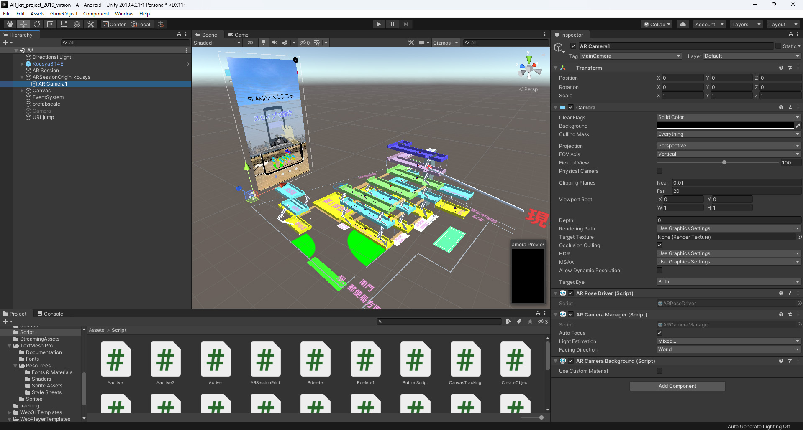

01. 概要と研究背景
高校の課題研究において、校内の複雑な動線や複数階層にわたる位置把握の難しさを解消することを目的に開発。従来の平面地図が持つ「空間の立体的な照合が困難である」という課題に対し、スマートフォンを用いたAR（拡張現実）技術を導入することで、視覚的・直感的に三次元構造を把握できるシステムを検証しました。
02. 3D空間へのアプローチと実装機能
画像認識による3Dモデル・情報の提示
空間の基準（原点）を確定させるため、校内環境に配置した特定の画像マーカーを認識する仕組みを実装。カメラを通すことで、自身の現在地を含む校舎全体の3Dモデルが現実空間に出現する仕様としました。また、校内発表用のポスターデータを仮想的に空間へ掲示するアプローチも試み、物理的な掲示スペースの制約をデジタルで補完する検証も行っています。
平面検知による自由な空間配置
ARFoundationの平面検知機能を用い、マーカーの有無に関わらず、床面を認識させて任意の場所に3D地図オブジェクトを生成・配置するシステムを構築。縮尺の変更や削除など、ユーザーの環境に合わせた操作系も合わせて実装しました。

// 開発画面：ARFoundationを用いた平面検知ロジックと3Dモデルの配置検証
03. 現在の視点と技術的ルーツ
外部のプラグインをただ組み合わせるだけでなく、実機での検知精度の限界や、環境光の変化によって認識が外れてしまうといった、現実の物理空間とデジタルデータを同期させる際特有の課題に直面。当時は画面上にリセットボタンを設けるなどのUI面からのアプローチを試みました。
「限られた物理リソースを三次元データで拡張する」というこの時の経験が、現在の大学での情報メディア分野への進学動機となり、現在のBlenderを用いた造形やUnityでの空間表現といった創作活動の強固な原点となっています。